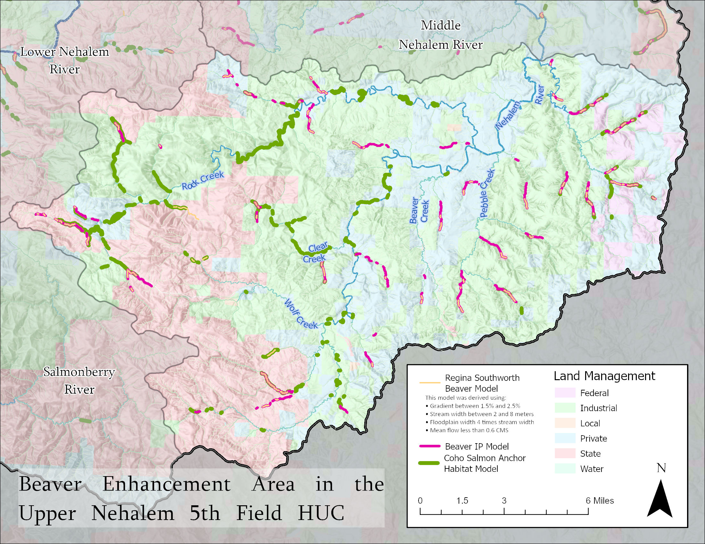
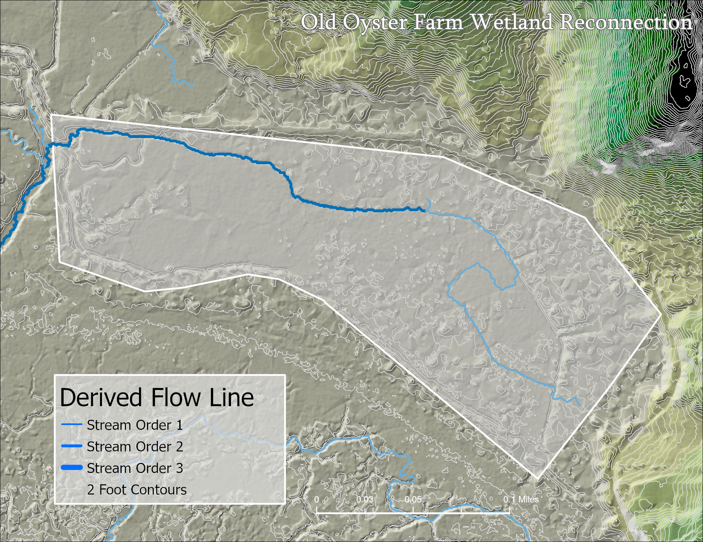
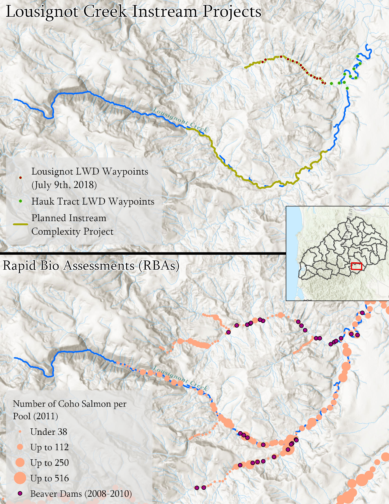

Protecting Coho Salmon in the Nehalem Watershed
My efforts, along with a web application for the viewing and querying of data, are presented in the story map below.
Several maps I created for the partnership include:
- Beaver habitat analysis in "Beaver Enhancement Area"
- Potential dam location modelling

- Riparian project site mapping

- Wetland re-connection flow line modelling
- Rapid Bio Assessment (RBA) mapping
{kind=link}
{kind=link}
{kind=link}
My efforts, along with a web application for the viewing and querying of data, are presented in the story map below.
Skills used: database management, application development, data communication, hydrological analysis, conservation and management, climate modelling, stakeholder interactions.
About Me
My name is Ian Maher. I am a recent graduate of the GIS Certificate Program at Portland Community College. I studied Zoology at Oregon State University for my undergraduate degree. I am passionate about the outdoors and our natural environment. I have many hobbies including scuba diving, coding, making music, hiking, reading, and traveling. I recently moved back into the United States after living abroad for several years and I am ready to begin a career as a GIS specialist. I love making maps and engaging with mapping projects in my free time. Mapping is a powerful tool for visualizing data and discovering patterns, as well as communicating messages effectively. I hope you enjoy some of the maps I have made.